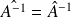
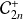
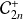

Sujet MP 2015-16 : centro-transposition d'une matrice carrée / corrigé complet
Le sujet est téléchargeable ci-dessous.
Le corrigé des questions de mathématiques est de François Sauvageot ! Merci à lui.
Question
1. a. Écrire une fonction, sur le modèle def J(n) :... renvoyant la matrice
.
Je suppose qu'on peut utiliser les module numpy et numpy.linalg de la synthèse que fournit le concours sur le calcul matriciel.
import numpy as np
import numpy.linalg as alg
Il peut être utile d'avoir la matrice
 donnée dans le sujet pour faire des essais.
donnée dans le sujet pour faire des essais.
A = np.array([[i + 4 * j for i in range(1, 5)] for j in range(4)])
def J(n):
J = np.zeros((n, n))
for l in range(n):
J[l, n - 1 - l] = 1
return(J)
Question
1. b. Écrire une fonction randMatrix (d'arguments
 ,
,
 ) et renvoyant une matrice pseudo-aléatoire de taille
, à coefficients dans l'intervalle d'entiers
.
) et renvoyant une matrice pseudo-aléatoire de taille
, à coefficients dans l'intervalle d'entiers
.
Utiliser cette fonction pour conjecturer le rapport entre
et l'application
 .
.
Justifier mathématiquement le résultat conjecturé.
Là encore, je vais utiliser un module ; numpy.random de la synthèse sur les Probabilités.
import numpy.random as rd
Une fois le module numpy.random importé, il suffit d'utiliser rd.randint().
def randMatrix(n, p):
return(rd.randint(1, 100, (n, p)))
Voici quelques essais avec la matrice
.
In [36]: np.dot(A, J(4))
Out[36]:
array([[ 4., 3., 2., 1.],
[ 8., 7., 6., 5.],
[12., 11., 10., 9.],
[16., 15., 14., 13.]])
In [37]: np.dot(J(4), A)
Out[37]:
array([[13., 14., 15., 16.],
[ 9., 10., 11., 12.],
[ 5., 6., 7., 8.],
[ 1., 2., 3., 4.]])
In [38]: np.dot(Out[37], J(4))
Out[38]:
array([[16., 15., 14., 13.],
[12., 11., 10., 9.],
[ 8., 7., 6., 5.],
[ 4., 3., 2., 1.]])
On peut donc conjecturer que
 .
.
On a en calculant le produit matriciel et en observant que est la matrice .
Question
1. c. Écrire une fonction, sur le modèle def centro(A) :..., d'arguments une matrice
et renvoyant
.
def centro(A):
Jn = J(len(A))
return(Jn.dot(A).dot(Jn))
Question
2. a. Montrer que l'application
est un automorphisme involutif de
 .
.
Comme est involutive, la centro-transposition coïncide avec la conjugaison par (i.e. ) et donc on a affaire à un automorphisme d'algèbre. Toujours par involutivité de , ce morphisme est lui aussi involutif.
Question
2. b. Montrer que , et que ,  .
Cela résulte du fait qu'il s'agit d'un morphisme d'algèbre. Il semble que le sujet pense qu'il n'y a qu'un type de morphisme, ce qui est ridicule.
Question
2. c. Montrer que pour tout matrice de
, on a
.
Comme est sa propre transposée, et en fait est une symétrie orthogonale, la centro-transposition est aussi l'ortho-conjugaison par ( ) et donc commute à la transposition.
On peut donc dire que la centro-transposition commute avec la transposition.
Question
2. d. Montrer que pour tout matrice de
, on a
.
La conjugaison préservant le déterminant, c'est évident.
On définit

Question
3. a. Montrer que
et
sont deux sous-espaces supplémentaires de
.
La conjugaison par étant une involution, la centro-transposition est un automorphisme diagonalisable, de valeurs propres 1 et -1. L'assertion demandée résulte du lemme de décomposition des noyaux.
Question
3. b. Montrer que .
Préciser la dimension des sous-espaces de cette somme directe (raisonner suivant la parité de
).
Puisque la transposition et la centro-transposition commutent, ces deux endomorphismes sont simultanément diagonalisables. La décomposition en somme directe en résulte. Une base de co-diagonalisation est donnée par les matrices
;
;
;
.
Les dimensions respectives sont donc ,
, et .
Question
3. c. Écrire une fonction, sur le modèle def decomp(A) :... d'argument
et qui renvoie le quadruplet des composantes de
sur la somme directe précédente. Donner un exemple (non trivial).
Pour tout
de
 , on note
la matrice d'ordre
définie par
.
, on note
la matrice d'ordre
définie par
.
Question
4. a. Écrire une fonction, sur le modèle def Q(n) :..., renvoyant
.
Il existe une fonction concatenate dans le module numpy pour créer des matrices par bloc.
def Q(n):
In = np.eye(n)
Jn = J(n)
Q1 = np.concatenate((In, -Jn), axis = 1)
Q2 = np.concatenate((Jn, In), axis = 1)
Qn = np.concatenate((Q1, Q2), axis = 0)
return(Qn)
Question
4. b. Montrer que la matrice est orthogonale.
Par définition, on a , d'où l'assertion.
Question
4. c. Soit
 une matrice de

, définie par blocs d'ordre
sous la forme
.
une matrice de

, définie par blocs d'ordre
sous la forme
.
Déterminer une relation entre
 et
d'une part, entre
et
d'une part, entre
 et
d'autre part.
et
d'autre part.
Former . En déduire .
En écrivant , il vient et .
Un calcul par blocs donne . Comme on a et que est une involution, on a et puisqu'on a affaire à un déterminant par blocs, on a . D'après la question 4. b. on a aussi et donc .
Question
5. Étudier la diagonalisabilité de .
Petit test avec Python...
M = np.array([[4, 1, -9, 6], [3, 2, -4, 1], [1, -4, 2, 3], [6, -9, 1, 4]])
In [3]: alg.eigvals(M)
Out[3]: array([-4., 2., 6., 8.])
In [4]: L = alg.eig(M)
In [5]: L[1].dot(np.diag(L[0])).dot(alg.inv(L[1]))
Out[5]:
array([[ 4., 1., -9., 6.],
[ 3., 2., -4., 1.],
[ 1., -4., 2., 3.],
[ 6., -9., 1., 4.]])
A priori pas de soucis :)
Argument mathématique
On peut appliquer la question précédente car
est centro-symétrique pour tout réel
 . On a
. On a
et donc
. Comme le polynôme caractéristique de
est simplement scindé sur
 , elle y est diagonalisable.
, elle y est diagonalisable.